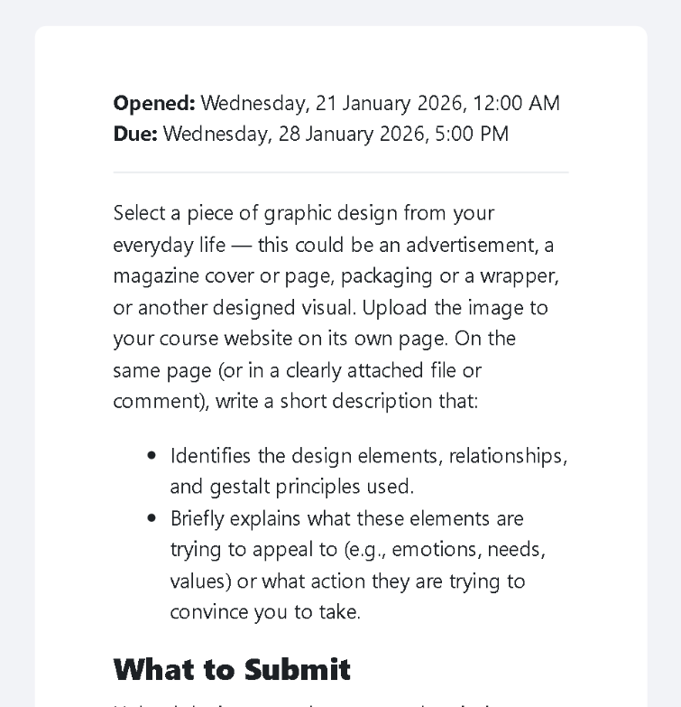
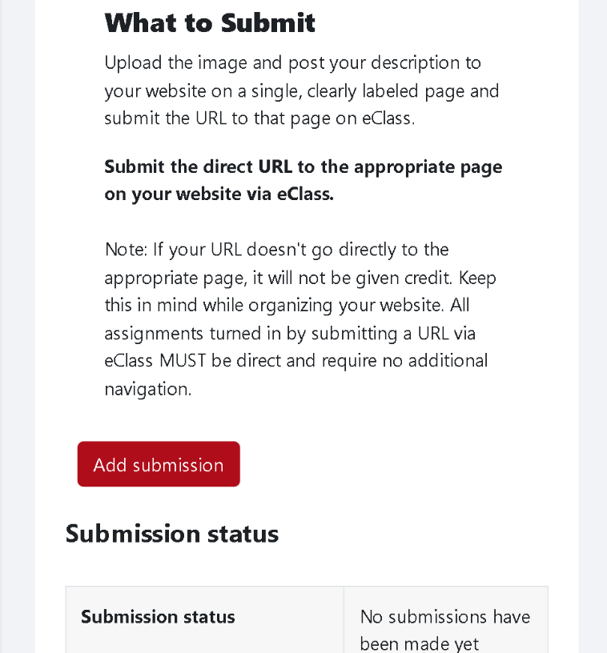
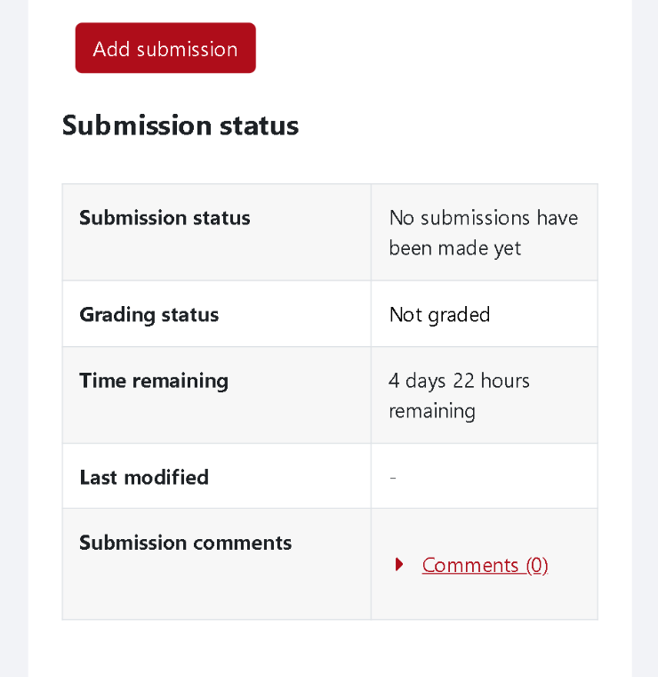
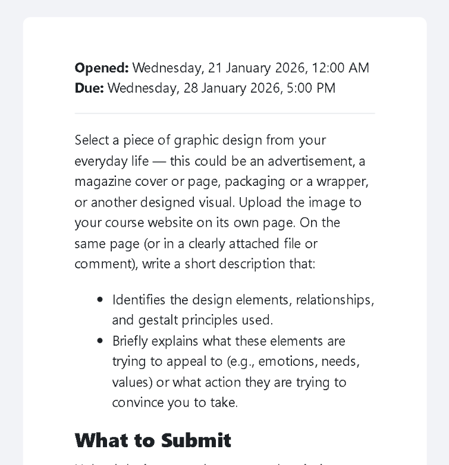
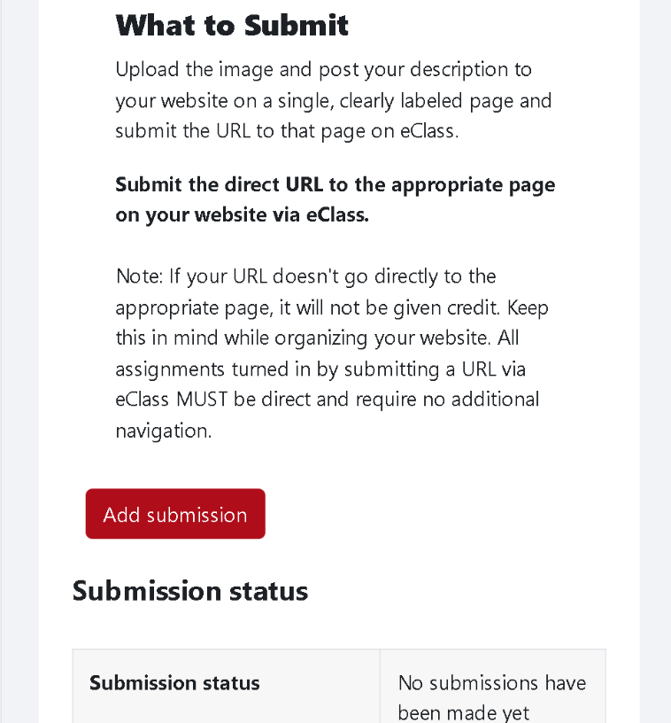
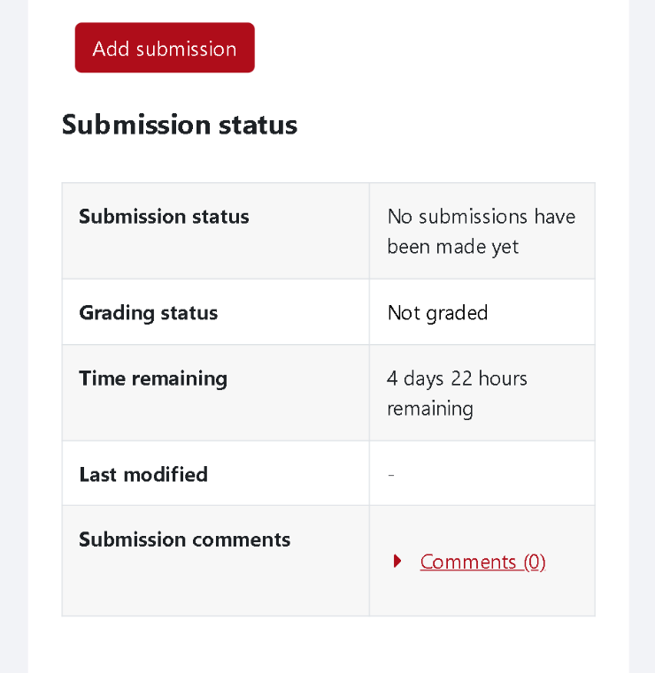
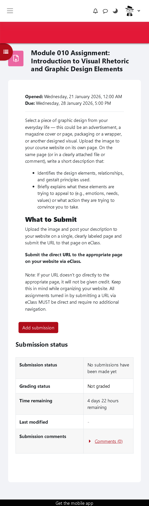

Module 10: Introduction to Visual Rhetoric and Graphic Design Elements
A breakdown on York's e-class assignment portal.
THEA3135, Richard Lau
The piece of graphic design I decided to analyze was the York University e-class assignment submission webpage.
In the navigation bar at the top, we can see a hamburger icon at the top-left. On the right, there are three small icons, following the Gestalt principle of proximity, of these icons' functions of these icons are part of the same group.
Below that, we have a solid York Red; this horizontal line creates a sense of separation. Followed by a bold line of text. This is the strongest hierarchical element of this page in terms of its size and space. This signifies itself as an important part of this page, whose function is the assignment title.

Underneath, we can see a change in background colour and text alignment. This signifies to us that it is a separate element. The text is smaller and more condensed, which makes this element visually lower in hierarchy. This element functions as the assignment description.
In the assignment description section, we see the Gestalt principle of proximity being used again. The date opened and the due date are visually separated from the following paragraphs.
Further down, we can see two bullet points, which break alignment with the text. This break in rhythm creates a sense that This element is a side idea that it further expands on the previous paragraph.

We see another hierarchically strong element, which breaks up the grouping of information. Through a stronger contrast in color and scale.
Underneath, we see an "Add Submission" button. This button has a lot of spacing in between other elements, breaks alignment, has a unique contrast in color and a different visual form (rectangle). Alongside the text inside, this element provides a strong call-to-action for users to submit their assignments.

Below that, we finally see a table of the submission status. The boxes without red, underlined text show negative affordances, telling the user that they cannot be clicked. The one box that does have this red, underlined text and arrow show an affordance that it can be opened/clicked.

In the navigation bar at the top, we can see a hamburger icon at the top-left. On the right, there are three small icons, following the Gestalt principle of proximity, of these icons' functions of these icons are part of the same group.
Below that, we have a solid York Red; this horizontal line creates a sense of separation. Followed by a bold line of text. This is the strongest hierarchical element of this page in terms of its size and space. This signifies itself as an important part of this page, whose function is the assignment title.
Underneath, we can see a change in background colour and text alignment. This signifies to us that it is a separate element. The text is smaller and more condensed, which makes this element visually lower in hierarchy. This element functions as the assignment description.
In the assignment description section, we see the Gestalt principle of proximity being used again. The date opened and the due date are visually separated from the following paragraphs.
Further down, we can see two bullet points, which break alignment with the text. This break in rhythm creates a sense that This element is a side idea that it further expands on the previous paragraph.

We see another hierarchically strong element, which breaks up the grouping of information. Through a stronger contrast in color and scale.
Underneath, we see an "Add Submission" button. This button has a lot of spacing in between other elements, breaks alignment, has a unique contrast in color and a different visual form (rectangle). Alongside the text inside, this element provides a strong call-to-action for users to submit their assignments.

Below that, we finally see a table of the submission status. The boxes without red, underlined text show negative affordances, telling the user that they cannot be clicked. The one box that does have this red, underlined text and arrow show an affordance that it can be opened/clicked.

